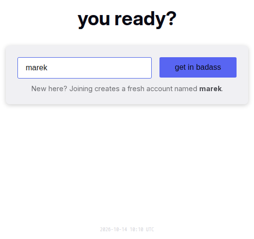

Sign-in and sessions
Getting into Yap is meant to be forgotten. An account is a username and nothing else: no password, no e-mail. A device that has signed in once stays signed in. A new device gets in through a login link, through the network it shares with a signed-in device, or through a short code. This page decides how accounts come to exist, every way in, what a session is, how it ends, and what the installed app does about identity.

Rules
Accounts
AU-01An account is a username with an optional display name, avatar, bio and location. The username is chosen once and never changes. Signing in always uses the username; the display name never does.
AU-02A username has 2 to 23 characters: lowercase letters, digits, "_" and ".", with no two periods in a row. The login box lowercases and trims as the user types and shows the rule that fails.
AU-03The bot's username is reserved, and a username that equals a member's display name is refused with an explanation. Why: members typed their display name on the login page and made a second account without noticing.
AU-04The first human account on a server is the admin. The bot is never the admin. There is no way to rename an account, move the admin role or delete an account from the app.
AU-05The admin can close registration and can require approval. Closed: the login page keeps its form for existing users and tells a new name that registration is closed. Approval: a new name waits on the login page while the admin gets a message; approval signs the person in, rejection lets them try another name. Invites bypass both.
AU-06With persistence off (no database), accounts live until the server restarts. After a restart every device sees the login page and the usernames are free again. This is a product mode, not an error.
Ways in
AU-07The login page has one box, for the username, and one button. The heading, the button and the placeholder are playful texts from the configured lists. A free name shows the hint "New here? Joining creates a fresh account named {name}." and the button creates the account.
AU-08An existing username is checked in this order: smart login signs the device in at once; else, when the account has a login link or a secret code, the verification page asks for a code; else the page explains how to bring the login over from a signed-in device.
AU-09Smart login: the username alone signs the device in when the account has a signed-in device on the same network now, or had one on this network within the last 14 days. It is on by default for the server and for every account; the admin can turn it off for everyone and the person for themself. The account's other devices get a message about the new sign-in.
AU-10A login link is a URL with a readable code such as "blue-fox-4821". Opening it on any device shows "Welcome back, {username}" and one button; the button signs the device in. Opening the link alone never signs in. Why: messengers and link previews fetch pasted URLs.
AU-11Every account is born with a login link that never expires, and the bot's welcome message carries it. The person manages the link in Settings: reveal, copy, replace, revoke, and set an expiry of 1, 7 or 30 days or never. One link is active at a time; a new one revokes the old one.
AU-12The link's code also works as a typed code on the verification page, in any case and with any separators, for its own username only.
AU-13A secret code is an older way in: a passphrase such as "blue fox 42" made by the server, which the person can view, copy, replace, enable or disable in Settings. New accounts get none; a link replaces it.
AU-14The verification page takes the secret code or the link's code. A wrong code says so. After 20 wrong codes within 10 minutes, from anyone, every code sign-in pauses for 10 minutes and the admin gets a message. There are no other lockouts.
AU-15A link shows the address the viewer used to reach Yap, so a link copied from a phone works from that phone's network and nobody can plant another address. The admin can set one public address for the whole server.
Invites
AU-16Only the admin creates invites, with a private note and an expiry. The invited person picks a username and joins; the account is created even when registration is closed. The invite then becomes that person's login link.
AU-17An invite used by two people serves the first; the second still gets an account with a link of their own. An unknown, expired or revoked link says "This link no longer works" and offers the login page.
Sessions
AU-18A device that signed in stays signed in for a year from its last visit. Every visit extends it. Nothing asks the person to sign in again on a device they use.
AU-19Settings lists the account's connected devices: a phone or desktop icon, "This device" on the current one, the network address, and "Active {time}". The current device is always listed. One row per device, not per tab. A device that lost its connection leaves the list after 5 minutes.
AU-20"Sign out all other devices" ends every other device's sign-in at once, replaces the secret code when one exists, forgets the remembered networks, and invalidates the installed app's pending start tokens. Other tabs on this device stay. Login links stay: a leaked link needs Revoke. The person sees "All other devices have been signed out." with the new code when one exists.
AU-21When a device is signed out from elsewhere, it goes to the login page at its next action. Without a connection it shows the sign-in notice and keeps the cached conversations readable until then.
AU-22Sign Out ends this device only. When the account has no link and no code, a confirmation warns that the account cannot be reached again. When unsent messages exist, a confirmation warns that they are lost. Signing out removes every draft, pending message, cached conversation and notification subscription of the account from the device.
The installed app
AU-23An app installed from a signed-in browser signs in by itself on its first launch, within 72 hours of the install. After that it has its own session.
AU-24An app that starts signed out, for example on iOS, shows the login guide for the installed app: open Yap in the browser, copy the login link, open it here or type its code.
AU-25A different account signing in on a device starts from nothing: the previous account's drafts, pending messages and cached conversations are removed first.
Messages the bot sends
AU-26One minute after a person's first session, the bot sends the welcome message with the login link and, on a phone, the install line. On every sign-in of a new device the bot tells the account which way was used and from which address, with the advice to use "Sign out all other devices" if it was not them. The admin gets a message for a pending request, for a first join, and for the sign-in pause.
States
| State or trigger | Input | What the user sees |
|---|---|---|
| Free name typed | keyboard | Hint "New here? …"; the button creates the account and opens the lobby. |
| Name too short, bad characters, bot's name, a member's display name | keyboard | The matching error under the box; button disabled. |
| Existing name, same network as a signed-in device | all | Signed in at once; the other devices get the bot's message. |
| Existing name, account has a link or code | all | Verification page "Welcome back, {username}". |
| Existing name, no link, no code, no match | all | The guide with three steps and "Done, try again". |
| Right code | keyboard | Signed in; bot message to the account. |
| Wrong code | keyboard | "Wrong code". |
| 20 wrong codes in 10 min, anyone | all | "Too many attempts. Try again in a few minutes." for everyone for 10 min; admin message. |
| Registration closed, new name | keyboard | "Registration is temporarily closed" with its text; existing names still work. |
| Approval required, new name | keyboard | "Waiting for approval"; signed in on approval; "Try again" on rejection. |
| Login link opened, signed out | touch, mouse | "Welcome back, {username}", "Continue as {username}". |
| Login link opened, signed in as the owner | touch, mouse | Straight to the lobby. |
| Login link opened, signed in as someone else | touch, mouse | "Switch account?" with "Switch to {owner}" and "Stay as {current}". |
| Invite opened | touch, mouse | "You're invited to {Project}", a username box, "Join". |
| Expired or revoked link | all | "This link no longer works" and the login page. |
| Settings, New Link | mouse, touch | New link revealed; "New link created. The old one no longer works." |
| Settings, Revoke | mouse, touch | "Login link revoked"; "Create Login Link" appears. |
| Settings, expiry picked | mouse, touch | "Link expires {date}" or "Link never expires". |
| Sign out all other devices | mouse, touch | Other devices land on the login page; this one shows the kicked notice. |
| Sign Out, no way back | mouse, touch | Confirmation about losing the account. |
| Sign Out, unsent messages | mouse, touch | Confirmation about losing them. |
| Installed app, first launch | touch | Signed in without a step. |
| Installed app, starts signed out | touch | The installed-app guide. |
Wording
| Where | Text |
|---|---|
| Login heading (configured; defaults) | "welcome to {0}", "you ready?", "you found {0}", "{0}"; fallback "Welcome to {0}!" |
| Join button (configured; defaults) | "lessgo", "slide in", "hop on", "lock in", "get in queen", "join the squad", "get in badass"; fallback "Join Chat" |
| Username placeholder (configured; defaults) | "drop your @", "who dis?", "username goes here", "tag yourself"; fallback "Enter your username" |
| Login errors | "Username must be at least 2 characters"; "Username must be at most 23 characters"; "Only lowercase letters, numbers, _ and . allowed"; "Cannot have consecutive periods"; "Nice try! 🤖"; "\"{name}\" is a member's display name. If that's you, log in with your original username — changing your display name never changes your login. Otherwise, pick a different name."; "This username is already waiting for approval" |
| Login hint | "New here? Joining creates a fresh account named {name}." |
| Guide, browser | "Almost there!"; "To log in as {name} on this device:"; "Open the app on the device where you're already logged in"; "In Settings → Login Link, copy your link (create one if there isn't one), or just read its code"; "Open the link on this device, or come back here and type the code"; "Done, try again" |
| Guide, installed app | "Almost there!"; "This installed app starts signed out — your login for {name} stayed in the browser you joined from."; "Open {Project} in your browser — you should still be logged in there"; "In Settings → Login Link, copy your link (create one if there isn't one), or just read its code"; "Open the link here, or come back and type the code" |
| Registration closed | "Registration is temporarily closed"; "New signups are not being accepted right now. Please check back later." |
| Approval | "Waiting for approval"; "Your request to join as {name} has been submitted."; "An admin will review your request shortly. This page will update automatically."; "Your previous request was not approved. You can try a different username."; "Try again" |
| Verification page | "Welcome back, {username}"; "Enter your secret code, or the code from your login link."; placeholder "e.g. blue fox 4821"; "Sign In"; "Use a different username"; "Wrong code"; "Too many attempts. Try again in a few minutes." |
| Link page | "You're invited to {Project}"; "Pick a username to join."; "Join"; "Joining…"; "Welcome back, {username}"; "This link signs you in as {username} on this device."; "Continue as {username}"; "Signing in…"; "Switch account?"; "You are signed in as {current}. This link belongs to {owner}."; "Switch to {owner}"; "Switching…"; "Stay as {current}"; "This link no longer works"; "It may have expired or been revoked. Ask the person who sent it for a new one."; "Back to chat"; "Go to the login page"; "One moment"; "Too many sign-in attempts right now. Try this link again in a few minutes." |
| Link page errors | "That username is already taken"; "A member already goes by that name. Pick a different one."; "That username is already taken. Pick another one."; "That username is not allowed. Pick another one." |
| Settings, Login Link | "Login Link"; "This account is tied to this device only."; "You can log in from other devices with {ways}." with "your login link", "your secret code", "smart login from a network you used recently"; "Open this link on any device or browser to sign in as {username}. Anyone who has it can sign in, so keep it private. On the login page you can also type the last part of the link (the code) as your secret code."; "Create a link that signs you in on any device or browser. Save it somewhere safe, like your notes. It's the easiest way back into this account."; "Reveal"; "Hide"; "Copy"; "Copied!"; "New Link"; "Revoke"; "Create Login Link"; "Never expires"; "Expires in 1 day"; "Expires in 7 days"; "Expires in 30 days"; "Expires {date}"; "Login link created"; "New link created. The old one no longer works."; "Login link revoked"; "Link never expires"; "Link expires {date}"; "Allow smart login"; "Log in without a code from a network you've used recently." |
| Settings, Secret Code | "Secret Code"; "Use this secret code to log in as {username} on another device or browser."; "The older way in: a short code you type together with your username on the login page. Optional now that login links exist."; "New Code"; "Disable"; "Enable Secret Code"; "Secret code enabled"; "Secret code changed"; "Secret code disabled" |
| Settings, sessions | "Active Sessions"; "This device"; "Unknown IP"; "Active {time}"; "Sign out all other devices"; "Signing out..."; "Other devices signed out"; "Failed"; "No active sessions."; "All other devices have been signed out."; "Your login link keeps working."; "Your secret code was automatically changed. See the new one below." |
| Bot, welcome | the configured welcome text; "📱 I noticed you're on a phone. It's a much better experience if you install it to your homescreen — it will look and feel like a normal app. Please also allow notifications when prompted so you don't miss messages. You can change this anytime in Settings."; "🔗 One more thing — this is your personal login link: {url}"; "Open it on any device or browser and you're straight back in this account (new phone, reinstalled app, second browser). Save it somewhere safe, like your notes. Don't share it — anyone who has it can sign in as you. On the login page you can also type its code, {code}, as your secret code. You can manage the link anytime in Settings." |
| Bot, new device | "🔐 New device sign-in detected for your account using {method} from IP {ip}. If this wasn't you, open Settings and use Sign out all other devices immediately." with "smart login (same network)", "your login link" or "secret code" |
| Bot, rescue link | "🔗 An admin created a new login link for you: {url}"; "Your previous link no longer works. Save this one somewhere safe." |
| Bot, to the admin | "👋 {username} is requesting to join. Go to the Admin panel to approve or reject."; "👋 {display name} just joined the chat!"; "🚨 {n} failed login-link attempts in the last few minutes. Code sign-ins are paused for 10 minutes. Someone may be guessing codes — check the Logs tab in Admin for LOGIN_FAIL entries." |
Related
- Header, sidebar and overlays for Sign Out in the status menu and the logged-out redirect.
- Offline and installation for the installed app and what the device keeps.
- Settings for the Login Link, Secret Code and Active Sessions sections.
- Administration for invites, registration switches and the rescue link.
- Presence for what a connected device means.